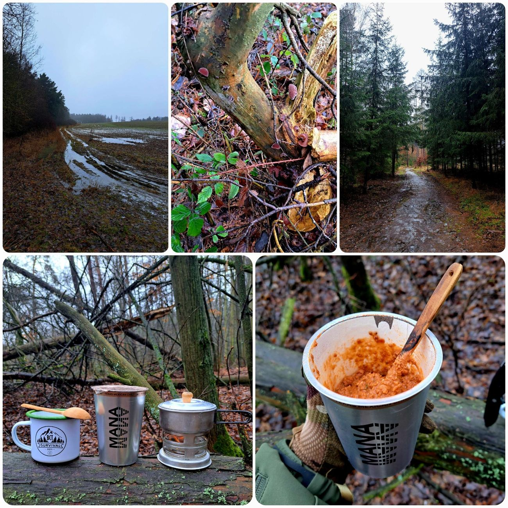
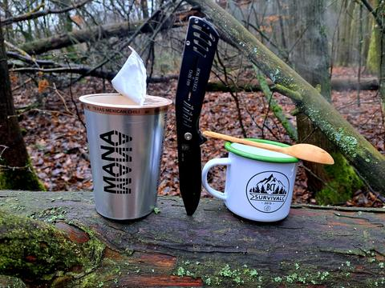
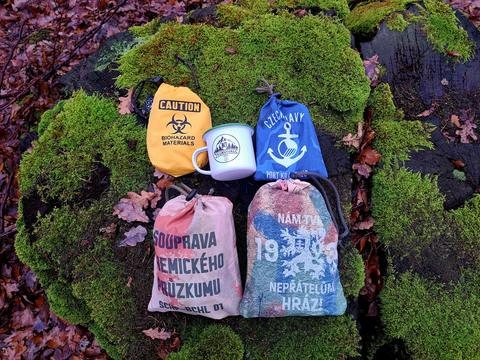

Potulka
Bláto, ušiska a texas chilli






Dneska vyrážím v neděli a netradičně už chvilku po deváté. Předpověď počasí jim tenhle týden vůbec nevychází - prší, když nemá, a když má, tak neprší. Před týdnem tu ležel sníh a dneska po něm není ani památky. Mezi devátou a jedenáctou má být údajně okno bez deště.
Déšť mi sice nevadí, ale nechci v něm jít ještě předtím, než zalezu do porostu.
Celou noc lilo, takže v lese je mokro, bahno a všechno klouže. Oproti mrazům je tohle jiná disciplína - člověk si teď ani pořádně nemá kam sednout.
Mám v plánu menší kolečko přes místo, kde rostou ušiska. Když je mokro a teploty nad nulou, mohla by být nějaká úroda.
Ještě než dorazím na místo, dávám si oběd - MANU Texas Mexican Chilli.
Vodu vařím na legendárním vařiči Vařík, ale dneska zkouším biolíh do krbu… a popravdě mě to zklamalo. Zatímco s technickým lihem uvařím 2 dcl vody na 10 ml, dneska jsem musel použít 25 ml. Možná to bylo teplotou, možná dnem, možná vesmírem - ale prostě nic moc.
Co se týká samotné Many, byl jsem mile překvapený. Recenze jsou dost negativní, ale realita byla jiná: chuťově zeleninové, kořeněné a občas, když člověk narazil na chilli, tak i pěkně pikantoš. Vložka na kousání je na první sousta zvláštní, ale dá se na ni zvyknout. Jako celek překvapivě dobré.
Hodnotím 4 choroše z 5 (v kategorii instantních jídel). Uvidíme, jak dopadnou další druhy. Jen ta cena je na zvážení.
Pak už se nořím do porostu. Prodrat se ostružinami je klasika, ale bezy kontroluju poctivě. Na některých nacházím malá ouška - ty tam nechávám pro ostatní nebo na příští potulku. U jednoho stromu konečně nacházím pěkná ušiska u země. Světlá, čerstvá, přesně ta, která člověk chce.
Po třičtvrtě hodině mám v pytlíku dostatek a pomalu to stáčím zpátky domů.
V lese je prostě parádně - ať sněží, prší nebo je horko. Jen se na to musí člověk připravit. A možná i smířit s tím, že člověk nikdy neví, jestli si dneska odnese plnej pytlík ušisek, nebo jen mokrý boty a historku o tom, jak se snažil sednout na pařez, který se tvářil suše jen z jedné strany.
Ale to je na tom to nejlepší. Les nic neslibuje, nic nevysvětluje a nic nepředstírá. Prostě tam je - mokrý, bahnitý, studený, krásný. A člověk, který do něj vleze, si vždycky odnese přesně to, co zrovna potřebuje. I kdyby to měla být jen připomínka, že i v únoru se dá najít čerstvá úroda… když se člověk nebojí trochu zmoknout...
Na webu jsou vybrané fotky. Všech 19 fotek z této potulky najdete na Facebooku BCT Survival.